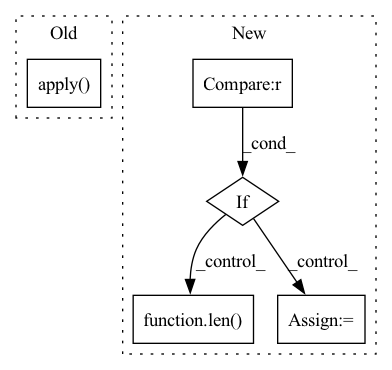

Pattern ID :41931
Before Change
def sigmoid_soft_cross_entropy(x, t, normalize=True, reduce="mean"):
return SigmoidSoftCrossEntropy(normalize, reduce).apply( (x, t)) [0]
After Change
log1p_exp = torch.log1p(torch.exp(x))
loss = t * (log1p_exp - x) + (1 - t) * log1p_exp
if _reduce == "sum" :
if normalize:
count = t.numel()
else:
count = len( t)
count = max(count, 1.)
loss /= count
In pattern: SUPERPATTERN
Frequency: 3
Non-data size: 5
Instances Fragment ID: 117475664
Project Name: yuta-hi/pytorch_bayesian_unet
Commit Name: 55d3121d70f1ce110a10cacc47efeffb9534dced
Time: 2020-03-30
Author: hiasa.yuta.ht7@is.naist.jp
File Name: pytorch_bcnn/functions/loss/sigmoid_soft_cross_entropy.py
M Class Name: AnonimousClass
N Class Name: AnonimousClass
M Method Name: sigmoid_soft_cross_entropy(4)
N Method Name: sigmoid_soft_cross_entropy(4)
M Parent Class:
N Parent Class:
M File Name: pytorch_bcnn/functions/loss/sigmoid_soft_cross_entropy.py
N File Name: pytorch_bcnn/functions/loss/sigmoid_soft_cross_entropy.py
M Start Line: 22
M End Line: 22
N Start Line: 17
N End Line: 33
Before Change
self.blocks = nn.ModuleList([ReversibleBlock(f=f, g=g) for f, g in blocks])
def forward(self, x):
return _ReversibleFunction.apply( x, self.blocks)
After Change
def forward(self, x):
blocks = self.blocks
if self.layer_dropout > 0 :
to_drop = torch.empty(len( self.blocks) ).uniform_(0, 1) < self.layer_dropout
blocks = [block for block, drop in zip(self.blocks, to_drop) if not drop]
blocks = self.blocks[:1] if len(blocks) == 0 else blocks
Fragment ID: 117475653
Project Name: lucidrains/reformer-pytorch
Commit Name: f989c1483f6f3d108722cfc1070933b6bee9a274
Time: 2020-02-23
Author: lucidrains@gmail.com
File Name: reformer_pytorch/reversible.py
M Class Name: ReversibleSequence
N Class Name: ReversibleSequence
M Method Name: forward(2)
N Method Name: forward(2)
M Parent Class: nn.Module
N Parent Class: nn.Module
M File Name: reformer_pytorch/reversible.py
N File Name: reformer_pytorch/reversible.py
M Start Line: 118
M End Line: 118
N Start Line: 118
N End Line: 125
Before Change
:return: Dictionary mapping each hyperdrive child index to its best epoch.
best_fn = np.argmax if maximise else np.argmin
best_epochs = metrics_df.loc[primary_metric].apply( best_fn)
return best_epochs.to_dict()
def get_best_epoch_metrics(metrics_df: pd.DataFrame, metrics_list: Sequence[str],After Change
best_epochs: Dict[int, Any] = {}
for child_index in metrics_df.columns:
primary_metric_list = metrics_df[child_index][primary_metric]
if primary_metric_list is not None :
// If extra validation epoch was logged (N+1), return only the first N elements
primary_metric_list = primary_metric_list[:-1] \
if (len( primary_metric_list) == max_epochs_dict[child_index] + 1) else primary_metric_list
best_epochs[child_index] = int(np.argmax(primary_metric_list)
if maximise else np.argmin(primary_metric_list))
else:
best_epochs[child_index] = None Fragment ID: 117475658
Project Name: microsoft/hi-ml
Commit Name: 6ba3cfe6858af92c3567ade271a62b0c7fdc11e4
Time: 2022-11-07
Author: 61745616+harshita-s@users.noreply.github.com
File Name: hi-ml-cpath/src/health_cpath/utils/report_utils.py
M Class Name: AnonimousClass
N Class Name: AnonimousClass
M Method Name: get_best_epochs(4)
N Method Name: get_best_epochs(3)
M Parent Class:
N Parent Class:
M File Name: hi-ml-cpath/src/health_cpath/utils/report_utils.py
N File Name: hi-ml-cpath/src/health_cpath/utils/report_utils.py
M Start Line: 160
M End Line: 162
N Start Line: 159
N End Line: 184